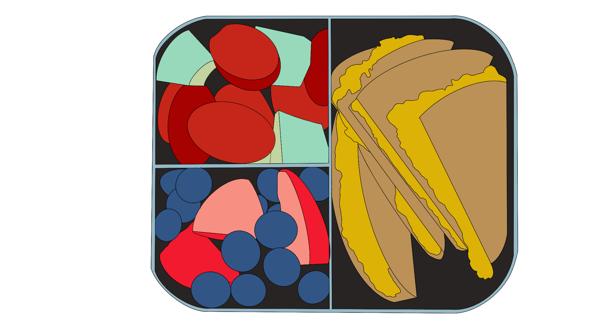
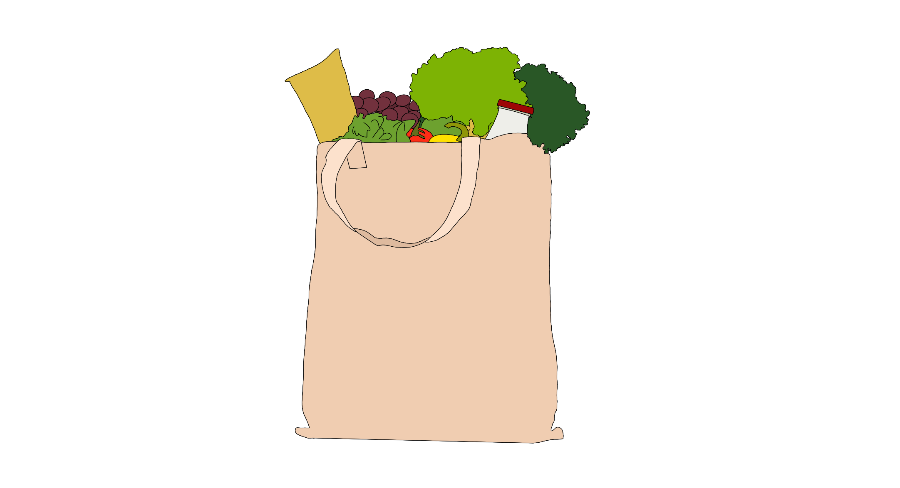

PRODUCTS
Sometimes, simple changes to the products that a person uses can create a large change in the size of their carbon footprint. Here are some examples of substitutions to everyday products that can be used to help protect the environment from the massive amounts of greenhouse gasses and waste being produced.
Water Filter Pitcher & Reusable Water Bottle
Why? It is estimated that 500 billion plastic water bottles are used and discarded every year worldwide, an estimated 156 bottles used per person yearly! By removing the dependency on plastic bottles, it can protect the environment greatly. Water filters provide clean drinking water while eliminating the need to continuously buy it at the store. Purchasing a reusable alternative to the plastic throw-away bottles decreases the amount of plastic ending up in landfills and the ocean.
Biodegradable bento boxes
Why? When you go to pack your lunch for school or work, it is common to reach for a plastic zipper bag or plastic container, and although reusable plastic containers are significantly better than the non-reusable alternatives, they are still made of large amounts of plastic. Plastic can take anywhere from 50-200 years to decompose, so, once these reusable containers become worn out and need to be replaced, they will end up sitting in landfills for years on end. A better alternative to plastic containers is biodegradable bento boxes, which can break down in roughly 2 years, significantly faster than common plastics.
Wool dryer balls
Clothing dryers are a modern luxury, allowing people to more quickly finish their loads of laundry and keep their clothes clean. However, there are ways to make this practice more sustainable. While air-drying your clothing can reduce the average household’s carbon footprint by 2,400 pounds, sometimes it is not practical for larger households to air-dry all of their clothing. However, using wool dryer balls in the dryer can significantly reduce the time it takes for the clothing to dry. This results in smaller amounts of energy being used, saving both your energy bill and the environment at the same time.
Reusable shopping bags
Why? Plastic bags are manufactured using non-renewable resources like crude oil, and shipping them produces significant greenhouse gasses. By using reusable bags you are saving resources, and reducing your carbon footprint. In addition, because you can use these bags over and over again it significantly cuts down on waste production. Reusable bags are a cheap and convenient alternative to single use plastic.
Reusable silicone straws
Why? It is estimated that almost 390 million plastic straws are used daily in the United States alone. These straws are manufactured in factories that emit large amounts of greenhouse gasses. Along with this, plastic straws cannot be recycled, creating more waste. Reusable straws are a cheap, sustainable alternative to single use plastics. They cut down on your carbon footprint, waste production, and are very cost effective.
Rechargeable batteries
Why? Rechargeable batteries are a simple way to save the planet and your wallet. The one time purchase of reusable batteries will last significantly longer than their single use alternative. The energy required to recharge the batteries is significantly lower than what is needed for traditional batteries. Waste production is also lowered because you don’t need to dispose of these batteries constantly. These small changes significantly reduces energy use and trash production.

Bidet
Why? Toilet paper is a major contributor to climate change. Massive amounts of trees are torn down every day to fuel the massive amounts of toilet paper being used. Trees pull carbon from the atmosphere and slow down the rate of climate change. Over 20,000 trees are flushed down the toilet every day. However, a bidet provides a much more eco-friendly alternative. By using water to clean up, you can help save the environment with every trip to the bathroom.
Energy efficient light bulbs
Why? Compact Fluorescent Lamps (CFLs) are one of the most energy efficient type of light bulbs. They use 75% less energy than traditional incandescent bulbs and can last up to 10 times longer. CFLs are also a cost efficient solution, costing less than $5 a bulb on average. Light-Emitting Diode (LEDs) are also a great energy efficient solution but they are more expensive averaging around $12 per bulb.